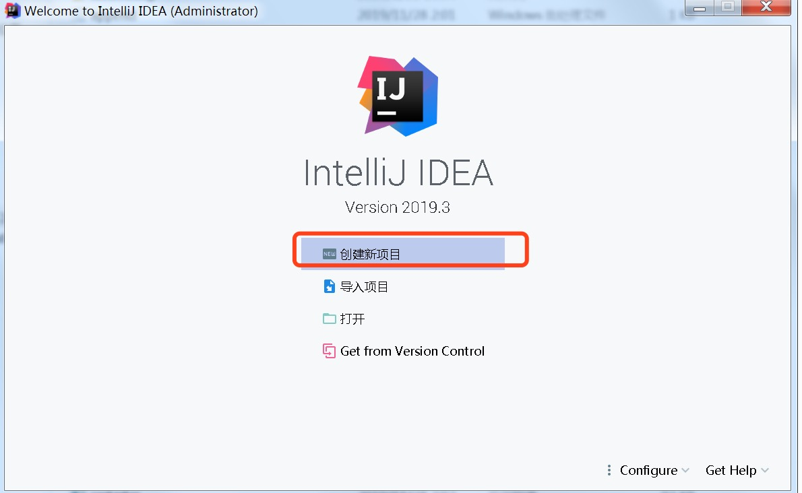
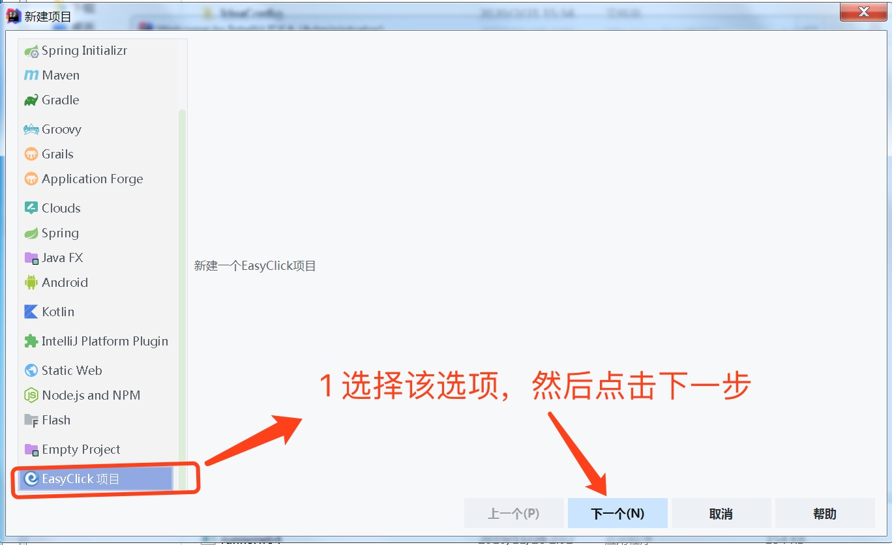
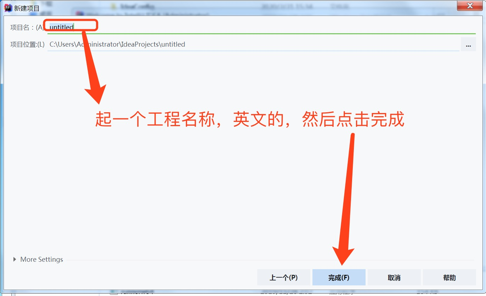
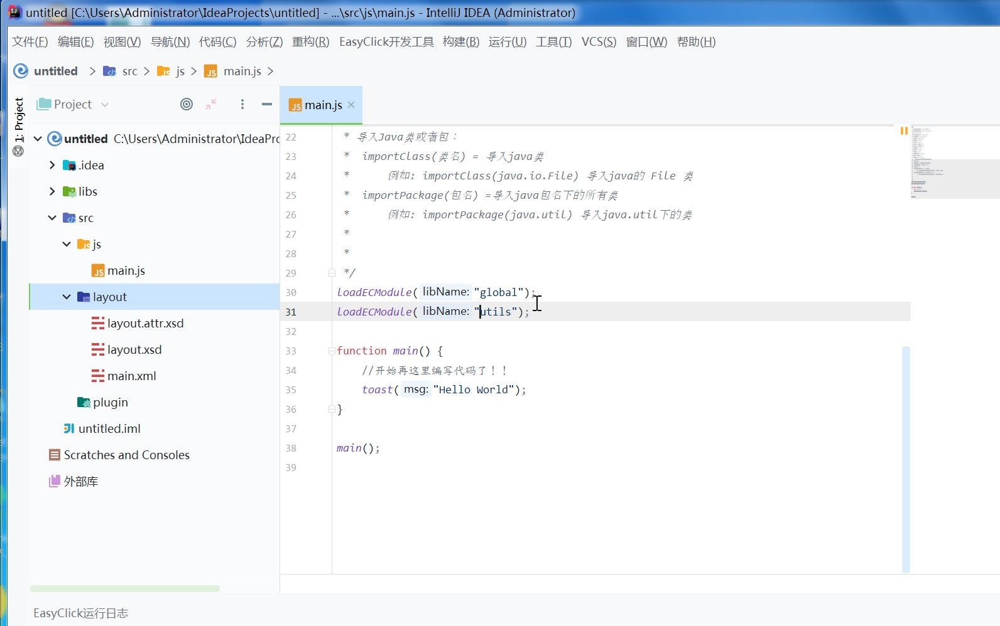
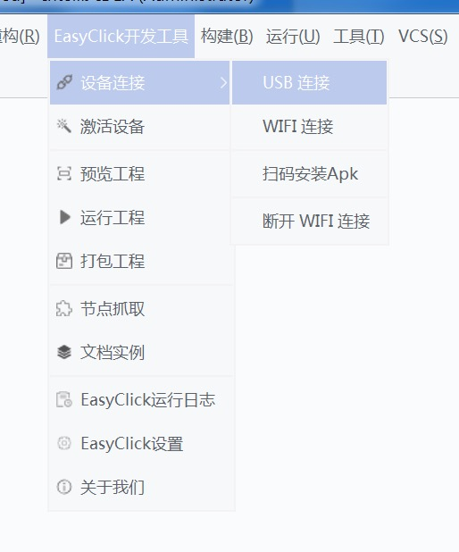
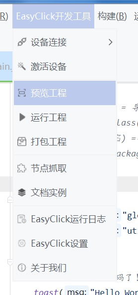
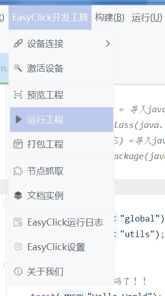

简介
特性
开始
开发工具介绍
安装
工程相关
设备相关
屏幕相关
设置
功能函数
全局模块
全局快捷事件
选择器&节点
无障碍事件
代理事件
图色函数
设备函数
文件函数
网络函数
线程函数
常用工具函数
Shell命令函数
UI定制
LinearLayout线性布局
FrameLayout帧布局
RelativeLayout绝对布局
ScrollView滚动框
View视图
Button按钮
TextView文本
EditText输入框
CheckBox复选框
RadioGroup布局
RadioButton单选框
Spinner下拉选择框
三方插件
常见问题
免责申明
本书使用 GitBook 发布
开始
1.
下载开发工具
2.
创建工程
3.
连接设备
4.
运行程序
1. 下载开发工具
百度网盘下载
提取码：7bhy
天翼云下载
密码：nup3
QQ群下载：777164022
解压后，打开bin/idea64.exe文件开始运行
2. 创建工程



创建成功

3. 连接设备
点击菜单 'EasyClick开发工具' - '设备连接' 选择任意一个连接方式 
4. 运行程序
预览UI

运行工程，如果运行失败提示无权限，可以点击菜单 'EasyClick开发工具' - '激活设备'

results matching "
"
No results matching "
"